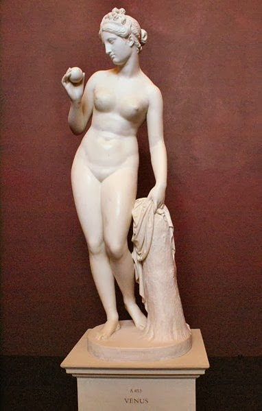

INSTITUTO FEDERAL DA PARAIBA
Campina Grande: 14/06/2023
Alunos: Felipe Luiz, Rafael, William
Curso: Telématica
Disciplina: Educação em Direitos Humanos
Professora: Rosemary Ramos Rodrigue
Séminario sobre questoes estéticas
Apresentação do grupo identitário que vamos trabalhar
Pessoas que não estão dentro do padrão estético são vítimas das mais variadas formas de discriminação, como: gordofobia; piadas sobre cabelos crespos; comentários ofensivos sobre algum aspecto físico do corpo etc.


Preconceito estético
A intolerância e o preconceito estético estão relacionados com a discriminação de pessoas que a princípio não se encaixam num padrão de beleza pré-estabelecido pela própria sociedade.
Isto é, historicamente falando, cada cultura espalhada pelo mundo afora impõe conceitos de beleza para sua população, julgando esteticamente o que é belo e o que é considerado como feio.
No contexto brasileiro, é comum observar que indivíduos que não se encaixam nos estereótipos de beleza estabelecidos enfrentam diferentes formas de discriminação. Alguns exemplos disso são a gordofobia, que se manifesta por meio de preconceito e estigmatização de pessoas com sobrepeso; a disseminação de piadas ofensivas sobre cabelos crespos; além de comentários desrespeitosos direcionados a aspectos físicos específicos do corpo, entre outros casos semelhantes. Essas atitudes discriminatórias refletem a falta de aceitação e o desrespeito às diferenças estéticas, resultando em um ambiente desfavorável para aqueles que não se enquadram nos padrões preestabelecidos.
O preconceito estético é uma forma de discriminação que ocorre quando indivíduos são julgados, tratados de maneira desigual ou desvalorizados com base em sua aparência física. Essa forma de preconceito é amplamente difundida na sociedade e afeta pessoas de diferentes origens, gêneros, idades e características físicas.
Um dos principais tipos de preconceito estético é a gordofobia, que se manifesta através da discriminação e estigmatização de pessoas com sobrepeso ou obesidade. Indivíduos gordos são frequentemente alvo de piadas, comentários ofensivos e tratamento discriminatório, o que pode levar a consequências negativas para sua autoestima e bem-estar emocional.
Além disso, a discriminação estética também é observada no contexto racial e étnico. Pessoas de diferentes etnias e raças podem ser alvo de preconceito com base em estereótipos e padrões de beleza impostos pela sociedade. Isso pode se manifestar por meio de comentários depreciativos, exclusão social, racismo estrutural e até mesmo violência física.
Outro exemplo de preconceito estético está relacionado à aparência física, incluindo características como cor dos cabelos, formato do corpo, altura, presença de cicatrizes ou deficiências físicas. Indivíduos que não se encaixam nos padrões estéticos valorizados pela sociedade podem ser alvo de discriminação, bullying e exclusão social. Essa forma de preconceito pode afetar negativamente a autoimagem, autoconfiança e saúde mental das pessoas.
Ademais, é importante destacar que o preconceito estético também afeta a comunidade LGBTQ+. Pessoas que fogem dos padrões binários de gênero ou que se expressam de forma não conformista podem ser alvo de discriminação e violência. O preconceito estético pode levar a exclusão, marginalização e limitação de oportunidades para esses indivíduos, comprometendo sua liberdade de expressão e direito à autodeterminação.
É fundamental combater o preconceito estético e promover uma cultura de respeito à diversidade e inclusão. Isso pode ser alcançado através da conscientização, educação e promoção de uma visão ampla de beleza, que valorize a individualidade, a autenticidade e a diversidade de corpos, aparências e formas de expressão. É necessário criar espaços seguros e acolhedores para todas as pessoas, independentemente de sua aparência física, para que possam viver de forma plena e igualitária, sem sofrer discriminação ou exclusão devido a preconceitos estéticos.
Os conceitos relativos ao tema
Preconceito estético direcionado a pessoas gordas
O preconceito estético direcionado a pessoas gordas, conhecido como gordofobia, é uma forma alarmante de discriminação que persiste em nossa sociedade. Essa forma de preconceito se baseia na crença errônea de que corpos magros são superiores e mais desejáveis, enquanto corpos gordos são considerados indesejáveis, feios ou até mesmo sinônimos de falta de disciplina e autocontrole.
Preconceito estético direcionado a pessoas negras
O preconceito estético direcionado a pessoas negras é uma forma profundamente enraizada de discriminação conhecida como racismo estético. Esse tipo de preconceito está ligado a padrões de beleza eurocêntricos que favorecem características físicas associadas a pessoas brancas, enquanto desvalorizam e marginalizam características naturais de pessoas negras.
Preconceito estético direcionado a pessoas africanas
O preconceito estético direcionado a pessoas africanas é uma forma específica de discriminação baseada em estereótipos e padrões de beleza eurocêntricos. Esse tipo de preconceito é profundamente enraizado e afeta a forma como as pessoas africanas são vistas e tratadas na sociedade.
Preconceito estético direcionado a pessoas árabes
O preconceito estético direcionado a pessoas árabes é uma forma de discriminação que ocorre devido a estereótipos e percepções negativas baseadas na aparência física e na cultura associada aos povos árabes. Esse tipo de preconceito é influenciado por representações estereotipadas e mídia tendenciosa, que retratam os árabes de maneira negativa e perpetuam estigmas.
Preconceito estético direcionado a pessoas indígenas
O preconceito estético direcionado a pessoas indígenas é uma forma de discriminação que ocorre devido a estereótipos e visões negativas baseadas na aparência física, nas tradições culturais e no modo de vida dos povos indígenas. Esse tipo de preconceito é resultado de uma falta de compreensão, conhecimento e respeito pela diversidade étnica e cultural.
Preconceito estético direcionado a pessoas magras
O preconceito estético direcionado a pessoas magras é uma forma de discriminação baseada em estereótipos de beleza e padrões corporais que favorecem a magreza como ideal. Esse tipo de preconceito é alimentado por pressões sociais, mídia e indústria da moda, que promovem a ideia de que apenas corpos magros são considerados atraentes e desejáveis.
Preconceito estético direcionado a pessoas de origem oriental
O preconceito estético direcionado a pessoas de origem oriental é uma forma de discriminação baseada em estereótipos e visões negativas associadas às características físicas e culturais dos indivíduos de ascendência asiática. Esse tipo de preconceito é conhecido como "racismo amarelo" e pode manifestar-se de várias maneiras.
Preconceito estético direcionado a pessoas indianas
O preconceito estético direcionado a pessoas indianas é uma forma de discriminação baseada em estereótipos e preconceitos relacionados à aparência física, cultura e origem étnica dos indivíduos indianos. Esse tipo de preconceito pode ocorrer em diferentes contextos e manifestar-se de várias maneiras.
O preconceito estético direcionado a pessoas LGBTQIAPN+
O preconceito estético direcionado a pessoas LGBTQIAPN+ é uma forma de discriminação baseada na expressão de gênero e orientação sexual das pessoas que fogem das normas tradicionais. Esse tipo de preconceito é conhecido como "homofobia estética" ou "heterossexismo estético".
Preconceito estético direcionado a pessoas com deficiências físicas
O preconceito estético direcionado a pessoas com deficiências físicas é uma forma de discriminação baseada na aparência e nas limitações físicas das pessoas. Esse tipo de preconceito é conhecido como "capacitismo estético".
Preconceito estético direcionado a pessoas com deficiência intelectual
O preconceito estético direcionado a pessoas com deficiência intelectual é uma forma de discriminação baseada nas capacidades cognitivas das pessoas. Esse tipo de preconceito é conhecido como "capacitismo estético". Pessoas com deficiência intelectual frequentemente enfrentam estereótipos negativos e preconceitos que as rotulam como "diferentes" ou "inferiores" devido às suas habilidades cognitivas. Elas podem ser alvo de discriminação, exclusão social e tratamento injusto em diversos contextos, como educação, emprego, relacionamentos e interações sociais.
Como os membros desse grupo são vistos na sociedade
Na sociedade, os membros que sofrem preconceito estético muitas vezes são estigmatizados e vistos como menos valorizados com base em sua aparência física. Isso pode ocorrer em relação a várias características estéticas, como peso, cor da pele, tipo de cabelo, altura, traços faciais, entre outros.
Pessoas que enfrentam preconceito estético podem ser marginalizadas e excluídas de oportunidades, seja no contexto profissional, educacional, social ou romântico. Elas podem ser submetidas a tratamentos injustos, como discriminação no emprego, rejeição em relacionamentos ou exclusão de certos grupos sociais.
O preconceito estético pode ser profundamente enraizado nas normas sociais e nos padrões de beleza impostos pela mídia, pela indústria da moda e pela cultura dominante. Essas normas muitas vezes perpetuam ideais inatingíveis de perfeição estética, reforçando a ideia de que apenas certos tipos de aparência são aceitáveis e valorizados.
Essas percepções negativas podem levar a problemas de autoestima e autoconfiança, impactando negativamente a saúde mental e emocional das pessoas afetadas. Além disso, o preconceito estético pode levar a comportamentos discriminatórios e até mesmo à violência física.
É importante lembrar que a beleza é subjetiva e que todos têm o direito de serem tratados com dignidade, independentemente de sua aparência física. A diversidade estética é uma parte natural da condição humana e não deve ser motivo de discriminação.
Para combater o preconceito estético, é necessário promover a educação e a conscientização sobre a diversidade estética e os efeitos prejudiciais do preconceito. É fundamental desafiar os estereótipos e padrões de beleza irrealistas, além de promover a aceitação e a valorização da diversidade de aparências.
A sociedade como um todo deve se esforçar para criar um ambiente inclusivo e acolhedor, onde todas as pessoas sejam respeitadas e valorizadas independentemente de sua aparência. Isso envolve a promoção da igualdade de oportunidades, a garantia de direitos e proteção contra a discriminação com base na aparência e a promoção de uma cultura de respeito e aceitação.
Cabe a cada um de nós desafiar nossos próprios preconceitos e contribuir para a construção de uma sociedade mais justa e inclusiva, onde todas as formas de diversidade sejam celebradas e respeitadas. A mudança começa com a conscientização e a ação individual, que podem se estender para o coletivo, criando um impacto positivo e duradouro na luta contra o preconceito estético.
Como surgiu o preconceito contra esse grupo
Em várias culturas ao longo da história, a obesidade já foi considerada um sinal de riqueza e abundância. Essa associação pode ser observada em diferentes períodos e regiões do mundo.
Um exemplo notável é a cultura europeia durante o Renascimento (séculos XIV a XVI). Nessa época, a obesidade era frequentemente vista como um símbolo de status social elevado. As pessoas ricas e aristocráticas tinham acesso a alimentos em quantidade e variedade, o que resultava em corpos mais cheios e arredondados. A obesidade era considerada um sinal de que a pessoa tinha recursos suficientes para se alimentar abundantemente e não estava sujeita à escassez.
Outro exemplo é encontrado em algumas culturas africanas tradicionais, onde a obesidade também foi historicamente associada à riqueza. Em algumas comunidades, especialmente nas regiões onde a escassez de alimentos era comum, ter uma aparência gorda indicava que a pessoa tinha recursos suficientes para se alimentar adequadamente e era considerada saudável e próspera.
É importante ressaltar que essas percepções culturais e históricas sobre a obesidade variam amplamente e não são universais. Em diferentes contextos culturais, a obesidade pode ser vista de maneiras diferentes, desde sinais de riqueza e prosperidade até associações negativas relacionadas à saúde e ao bem-estar.
É fundamental ter em mente que as atitudes em relação à obesidade mudaram ao longo do tempo, e atualmente prevalece uma maior conscientização sobre a importância da saúde e do equilíbrio na alimentação e no estilo de vida. O entendimento da obesidade como um problema de saúde tem ganhado destaque, e as percepções sociais estão se afastando da associação entre obesidade e status social.
É verdade que, em muitas narrativas de contos de fadas e histórias infantis, há uma tendência de retratar os personagens "do bem" como bonitos e os personagens "do mal" como feios. Essa representação estereotipada dos personagens está enraizada em convenções narrativas e pode influenciar a percepção estética das crianças desde cedo.
Essa associação de beleza com bondade e feiura com maldade pode reforçar a ideia de que a aparência física é um indicador de caráter ou moralidade. Isso pode criar uma visão simplista e preconceituosa de como as pessoas devem ser avaliadas com base em sua aparência externa.
É importante lembrar que essas narrativas são apenas histórias fictícias e não devem ser levadas como um reflexo da realidade. A diversidade de aparências e a valorização de qualidades internas, como bondade, compaixão e inteligência, devem ser incentivadas desde a infância.
Como pais, educadores e sociedade em geral, é fundamental promover uma educação que enfatize a importância de valorizar a diversidade e desafiar estereótipos prejudiciais. Isso pode ser feito por meio da exposição a diferentes tipos de narrativas, que retratem personagens com uma variedade de aparências e características, promovendo a compreensão de que a beleza vai além da aparência física.
Além disso, é essencial envolver as crianças em discussões abertas e honestas sobre a diversidade de corpos, características físicas e a importância de respeitar e valorizar as diferenças. Ao incentivar a empatia, a compreensão e a aceitação, podemos ajudar as crianças a desenvolver uma visão mais inclusiva e equilibrada dos padrões de beleza.


É verdade que a indústria do entretenimento, incluindo filmes, muitas vezes apresenta atores brancos e com padrões estereotipados de beleza como protagonistas. Essa representação limitada pode criar uma percepção de que a beleza e o sucesso estão associados a certos traços físicos e étnicos, enquanto outros grupos são marginalizados ou sub-representados.
Essa falta de diversidade na representação pode perpetuar ideais inatingíveis de beleza e reforçar padrões estreitos de aceitação. Isso pode afetar negativamente a autoestima e a percepção de valor próprio de pessoas que não se encaixam nesses padrões dominantes
É importante reconhecer a necessidade de uma maior diversidade e representação na indústria do entretenimento. O movimento por maior inclusão e representatividade tem ganhado força, com mais vozes levantando a importância de histórias e personagens que reflitam a diversidade do mundo real.
A inclusão de atores de diferentes origens étnicas, raças, idades, corpos e características físicas pode promover uma maior valorização da diversidade e contribuir para uma mudança nos padrões de beleza estabelecidos. Isso permite que mais pessoas se identifiquem e se sintam representadas nas histórias que são contadas.
Como espectadores, podemos apoiar e buscar filmes, programas de TV e outras formas de entretenimento que promovam a diversidade e representação autêntica. Também é importante apoiar e amplificar vozes diversas na indústria, incluindo escritores, diretores e produtores de diferentes origens, para garantir que uma variedade de perspectivas seja compartilhada.
Ao desafiar os padrões de beleza estabelecidos e promover uma maior inclusão na mídia e no entretenimento, podemos trabalhar para criar uma sociedade mais justa e equitativa, onde todas as formas de beleza sejam valorizadas e celebradas.
Na Grécia Antiga, a idealização da beleza estava fortemente ligada à mitologia e à adoração dos deuses. Os gregos atribuíam qualidades divinas aos deuses, incluindo sua aparência física, e isso influenciou os padrões de beleza da sociedade da época.
Os deuses gregos eram representados em esculturas e pinturas com corpos perfeitos, proporções harmoniosas e atributos estéticos considerados ideais. Essas representações dos deuses como seres fisicamente perfeitos e belos se tornaram modelos a serem seguidos pelos gregos em sua busca pela beleza.
Um exemplo notável é a figura de Apolo, deus da beleza e da perfeição, frequentemente retratado com um corpo atlético, musculoso e proporcional. A imagem de Apolo se tornou uma referência de beleza física masculina na Grécia Antiga.
No caso das mulheres, a figura da deusa Afrodite, associada à beleza e ao amor, também influenciou os padrões de beleza gregos. Acredita-se que as esculturas da deusa, com formas voluptuosas e curvas suaves, tenham influenciado a valorização da feminilidade, incluindo a ênfase em corpos esbeltos e proporções equilibradas.
É importante ressaltar que esses padrões de beleza estavam ligados à elite da sociedade grega, pois a arte e a escultura eram predominantemente produzidas para uma classe privilegiada. Além disso, as percepções de beleza variavam entre as diferentes cidades-estado gregas, com algumas valorizando atributos específicos.
Embora os padrões de beleza estabelecidos pelos gregos tenham influenciado a sociedade da época, é fundamental reconhecer que a beleza é subjetiva e varia culturalmente ao longo do tempo. Os padrões de beleza são moldados por fatores históricos, culturais, sociais e individuais, e é importante promover uma visão mais inclusiva e diversa da beleza, valorizando a variedade de características físicas e a individualidade de cada pessoa.